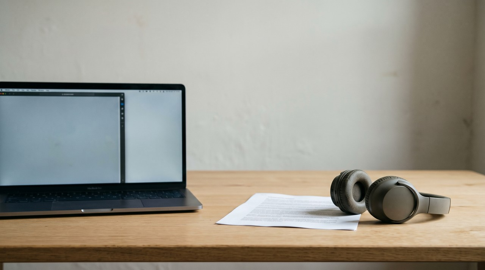

Spark-TTS is a free text to speech model from SparkAudio, and it copies a voice using a short recording and its transcript. The code has an Apache 2.0 licence, but the actual model files you run are called Spark-TTS-0.5B, and they use the CC BY-NC-SA 4.0 licence. This licence means no commercial use, so you can try it at home, but you cannot use it for client work or ads or paid jobs unless SparkAudio gives you permission.
| Spark-TTS-0.5B | GPT-SoVITS | VoiceClone | |
|---|---|---|---|
| Can it copy your voice? | Yes, from a short clip and its transcript | Yes, from a 5 second clip, and it can fine tune on about 1 minute | Yes, it trains on 1 to 3 minutes of your own recording |
| Licence | Code Apache 2.0, model CC BY-NC-SA 4.0, no paid work | MIT | Free tier, then $49 once |
| Windows | Not official, a community guide | Ready made Windows package | Windows 10 and 11 app |
| Languages | English and Chinese | English, Japanese, Korean, Cantonese, Chinese | English |
| Extra controls | Make a new voice from gender, pitch and speed | Speed control and a choice of reference clip | A word editor that fixes one word at a time |
Written by Inam. I made VoiceClone, the app in the last column, so read that column knowing I have a stake in it. My other engineering work is on designesh.com. Last updated 4 November 2026.
You are looking at Spark-TTS because the demos sound clean and the tool is free. Now you want to know if you can use a cloned voice for your YouTube channel or a client job. This is the best thing to ask first, because the rules changed one week after the model came out.
You can test Spark-TTS for free, but the model files are for non commercial use only. The code on GitHub uses Apache 2.0, and some websites still say that, but the model you actually download and run uses CC BY-NC-SA 4.0.
What is Spark-TTS?
Spark-TTS is a text to speech model, so you type your text and it reads it out loud to you. It was made by a team called SparkAudio, and they put the model on Hugging Face at the end of February 2025 before the research paper came out in March 2025. The model is named Spark-TTS-0.5B, so it has about half a billion parameters, and parameters are the numbers a model learns while it trains.
The system uses Qwen2.5, which is a small language model, and a speech codec called BiCodec. A codec is just a tool that changes sound into pieces called tokens so the language model can read them. BiCodec splits the speech into one set of tokens for the words and another set for the person speaking. The paper notes they trained it on a dataset called VoxBox, which holds 100,000 hours of speech, and the model card says it supports English and Chinese.
Can Spark-TTS clone your voice?
Spark-TTS supports zero shot cloning. This means it copies a voice from a single recording, and it does not need to train on the voice first. You just provide a short audio clip of the speaker and the text transcript of that clip, and then the model reads your new words in the same voice.
The example in the README uses both the audio clip and the text transcript, so you should write down exactly what you say when you record yourself. The team does not state a fixed length for the clip. I suggest a clean recording of 10 to 20 seconds in a quiet room, because that is a sensible starting point for any instant cloning model.
There is a second mode that other tools on this list lack. It is called Voice Creation, and you do not upload any voice file for it. You just choose a gender, a pitch and a speaking speed, and the model creates a new voice from those settings. This is useful when you need a narrator voice that does not belong to a real person.
Can you use Spark-TTS for commercial work?
Many people misunderstand the rules here. The GitHub repository lists Apache 2.0, which is a very open licence, and early articles told readers they could sell what they made. That licence only covers the code itself. On 7 March 2025 the model card on Hugging Face updated to CC BY-NC-SA 4.0, and the page explains that it changed from Apache 2.0 to be for non commercial use only.
The letters NC mean NonCommercial, so the licence states you cannot use the files for commercial purposes. SA means ShareAlike, so any modified version you share must carry this exact same licence. You need the model to run the code, so this stricter licence controls what you are allowed to do.
In normal terms, testing the tool and making audio for yourself at home is perfectly fine. Using it for a client voiceover, an ad, a paid audiobook or a money making channel counts as commercial use. If you plan to earn money from the audio, do not use Spark-TTS unless SparkAudio gives you written permission. I am not a lawyer, so please ask one if real money is involved.
Can you run Spark-TTS on Windows?
There is no official support, because the install steps in the README are for Linux. For Windows users, the page links to a community guide that a user posted in the repository issues on 28 February 2025. The process takes a few steps, but they are standard tasks for developers.
You first install Miniconda and create a new environment with Python 3.12. Then you run pip install using the requirements file. Next you install PyTorch, which is the library that runs the model, and you pick the CUDA build that fits your NVIDIA card. You then download the model files from Hugging Face and run python webui.py to start the web interface.
The README does not list a minimum graphics card requirement. The developers ran their speed tests on a single NVIDIA L20, and that is a large data centre card, so expect the tool to run slower on a home PC. If your computer does not have an NVIDIA card, try testing one short sentence before you plan a big project.
Spark-TTS or GPT-SoVITS for your own voice?
Spark-TTS is worth your evening if you just want to experiment, or if you need to mix Chinese and English in the same sentence. The Voice Creation mode is also quite useful for generating a new voice that belongs to nobody.
If you need your own voice for something you sell, I recommend GPT-SoVITS. It has an MIT licence, it clones from a 5 second clip, and you can fine tune it on about 1 minute of voice audio. Fine tuning keeps your natural accent and rhythm steady over a long script. The developers also provide a ready made Windows package, and I explain the setup in my guide on installing GPT-SoVITS on Windows.
Spark-TTS is not the only tool with this split setup. The F5-TTS model has open code but a non commercial model file, and Zonos uses Apache 2.0 for both parts. My advice is that you should always read the model card instead of trusting the GitHub badge.
Where does VoiceClone fit?
I built a tool called VoiceClone for people who want their own voice on Windows but do not want complex setup steps or licence worries. It is an app for Windows 10 and 11, and it runs GPT-SoVITS fully offline, so your recordings never leave your hard drive. You double click START VoiceClone.bat to open it, and you do not need to install Python, Conda or CUDA.
The application asks for 1 to 3 minutes of your voice, and it checks the audio quality first. This means it catches noisy or clipped recordings early on. You then click Make it perfect, and it trains the voice directly on your PC. It runs faster with an NVIDIA card, but it will still finish the job on a plain processor.
I will state its limits plainly: the app speaks English only, it cannot sing, and there is no Voice Creation mode like Spark-TTS. The free tier allows you to clone and fully train one voice, and you can make 3 generations to hear how it sounds. The $49 one time license is a single payment with no subscription. It adds retraining, a word editor, exports and unlimited length. You should only use it on your own voice, or on a voice where the owner has clearly said yes. You can get it from the download page to try it out.
FAQ
Is Spark-TTS free for commercial use?
Not for paid work, because the Spark-TTS-0.5B model files are under CC BY-NC-SA 4.0 and this licence does not allow commercial use, even though the code uses Apache 2.0. You can test it at home, but any paid work requires permission from SparkAudio.
What languages does Spark-TTS support?
The model card states it supports English and Chinese. The tool can mix both languages in a single line, and it can clone a voice to speak across them.
Does Spark-TTS work on Windows?
The official install instructions are made for Linux, but a user posted a community guide in the repository issues that explains the Windows setup using Miniconda and Python 3.12. You need to install PyTorch manually, and then you start the web interface by running python webui.py.
Does Spark-TTS need a transcript of my clip?
The cloning example in the README uses the audio clip and the exact text spoken in that clip. You need to write down what you say when you record, so your text transcript perfectly matches your audio.
Sources: the SparkAudio Spark-TTS README on GitHub, the Spark-TTS-0.5B model card and its commit history on Hugging Face, the Windows guide in issue 5 of the repository, the Spark-TTS paper on arXiv, and the CC BY-NC-SA 4.0 deed on creativecommons.org, all read on 4 November 2026, the GPT-SoVITS README on GitHub, and the VoiceClone product page on myvoiceclones.com.
Hear your own voice come back.
The free Windows app clones and fully trains one voice, yours, on your own PC. No account, no upload, and the download starts right away.